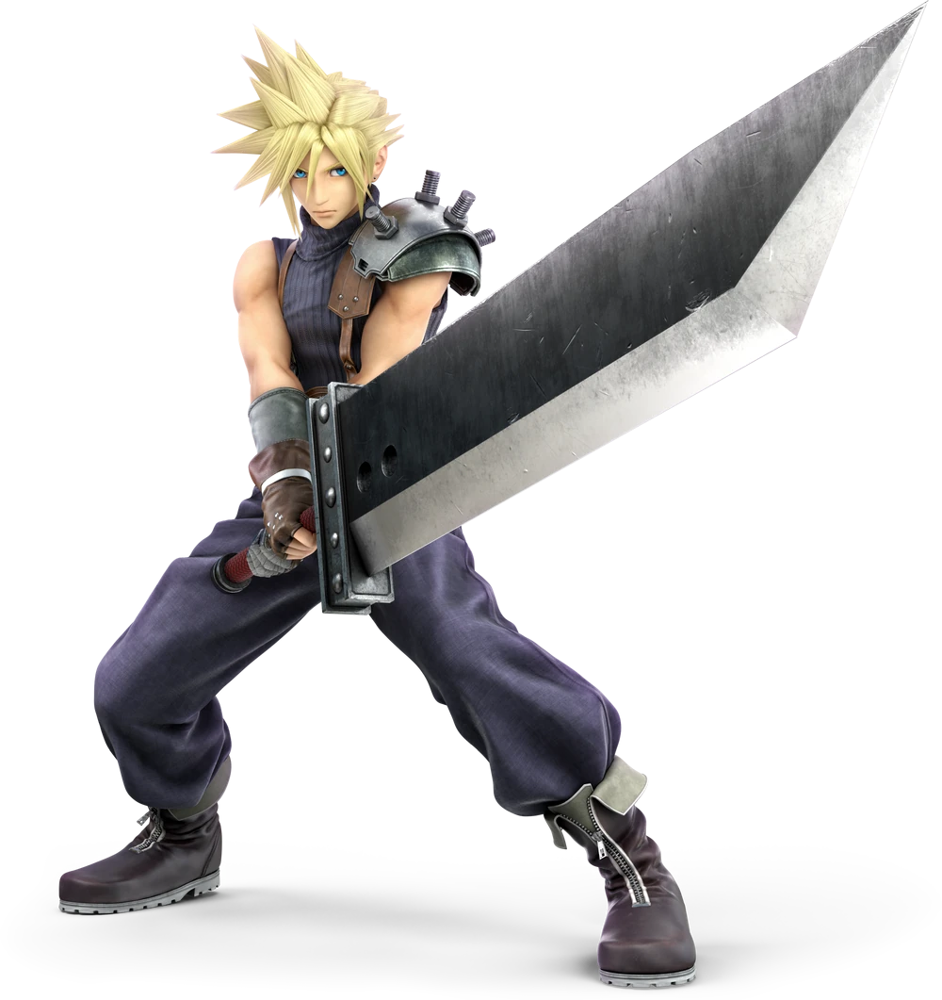
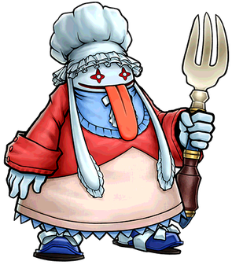
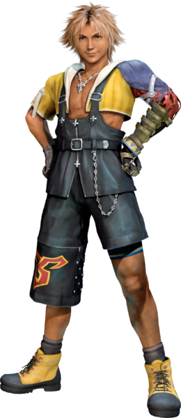
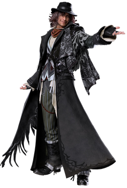
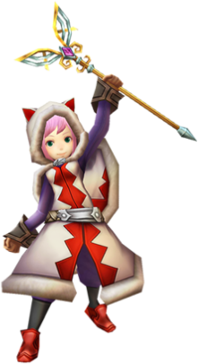
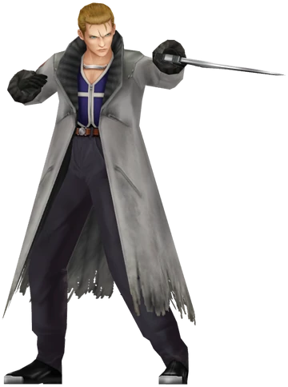
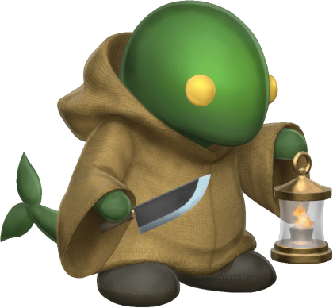

Solo Trial Mode
A single player mode for Final Fantasy TCG, inspired by Magic: The Gathering's Horde Mode. You play a normal deck against a 50 card AI deck that draws cards into play and attacks with all available Forwards, every turn. You win by milling the AI's deck to 0 cards before it deals 7 damage to you.

How to play

Setup
Pick / construct a legal 50 card FFTCG deck for the player and one for the AI.
- You take 2 full turns before the AI does anything.
- Draw 2 on each of those turns, as per the normal FFTCG rules.

Your Turn
Your turn works exactly as it does in a normal game.
- Active Phase.
- Draw 2.
- Main Phase.
- Attack Phase.
- The AI never blocks.
- For each point of damage you deal to the AI, mill 1 card from the top of its deck.
- End Phase.

AI Draw Phase
The AI doesn't make spontaneous decisions and instead follows a set of rules. It draws cards and plays whatever comes up. The AI never pays the CP cost for playing cards, and its EX Bursts don't trigger.
- Draw cards from the top of the AI deck until you draw a Forward.
- Every drawn card enters play immediately, if it legally can.
- Summons resolve immediately.
- Monsters enter play as written on the card.
- If the Forward can't stay in play because of the duplicate name rule, it breaks and the draw phase still stops there.

AI Backups
Backups work differently in this mode. Each AI Backup makes the AI's Forwards more powerful, and can be destroyed by winning blocks.
- Each AI Backup gives all AI Forwards +500 power, up to a maximum of +2,000.
- The bonus power is applied / removed straight away whenever a Backup enters or leaves play.
- When you destroy an AI Forward by blocking it, you also destroy the AI's oldest Backup.
- If the printed power of the destroyed Forward was 8,000 or more, destroy the AI's two oldest Backups instead of one.

AI Attack Phase
Every AI Forward attacks on every AI turn, starting from the leftmost Forward to the right.
- AI Forwards have haste, so they can attack the turn they come into play.
- AI Forwards don't dull when they attack.
- You can block as normal.
- When an AI effect has to choose one of your Characters, it picks the one with the highest current power.

Duplicate Names
The normal uniqueness rule applies to both sides.
- Neither you nor the AI can control two Characters with the same name.
- If a duplicate enters play, choose one to keep and put the other into the Break Zone.
- For the AI, always keep the one with the higher printed power.
- Cards with the Standard Unit icon can have multiple copies in play, as per standard rules.

Winning & Losing
A typical game lasts roughly 40 to 50 minutes and has different win conditions to a standard game.
- You win when the AI's deck reaches 0 cards.
- You lose when you take 7 damage.